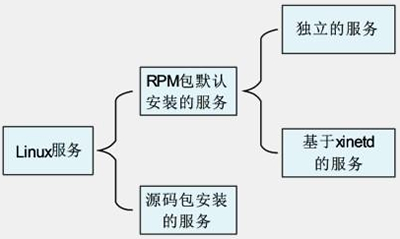

Linux系统服务及其分类
那么，什么是守护进程？它和服务又有什么关系呢？守护进程就是为了实现服务、功能的进程。比如，我们的 apache 服务就是服务（Service），它是用来实现 Web 服务的。那么，启动 apache 服务的进程是哪个进程呢？就是 httpd 这个守护进程（Daemon）。也就是说，守护进程就是服务在后台运行的真实进程。
如果我们分不清服务和守护进程，那么也没有什么关系，可以把服务与守护进程等同起来。在 Linux 中就是通过启动 httpd 进程来启动 apache 服务的，你可以把 httpd 进程当作 apache 服务的别名来理解。
服务的分类
Linux 中的服务按照安装方法不同可以分为 RPM 包默认安装的服务和源码包安装的服务两大类。其中，RPM 包默认安装的服务又因为启动与自启动管理方法不同分为独立的服务和基于 xinetd 的服务。服务分类的关系图如图 1 所示。
图 1 服务分类的关系图
我们知道，Linux 中常见的软件包有两种：一种是 RPM 包；另一种是源码包。那么，通过 RPM 包安装的系统服务就是 RPM 包默认安装的服务（因为 Linux 光盘中全是 RPM 包，Linux 系统也是通过 RPM 包安装的，所以我们把 RPM 包又叫作系统默认包），通过源码包安装的系统服务就是源码包安装的服务。
源码包是开源的，自定义性强，通过编译安装更加适合系统，但是安装速度较慢，编译时容易报错。RPM 包是经过编译的软件包，安装更快速，不易报错，但不再是开源的。
以上这些特点都是软件包本身的特点，但是软件包一旦安装到 Linux 系统上，它们的区别是什么呢？
最主要的区别就是安装位置不同，源码包安装到我们手工指定的位置当中，而 RPM 包安装到系统默认位置当中（可以通过"rpm -ql 包名"命令查询）。也就是说，RPM 包安装到系统默认位置，可以被服务管理命令识别；但是源码包安装到手工指定位置，当然就不能被服务管理命令识别了（可以手工修改为被服务管理命令识别）。
所以，RPM 包默认安装的服务和源码包安装的服务的管理方法不同，我们把它们当成不同的服务分类。服务分类说明如下。
RPM 包默认安装的服务。这些服务是通过 RPM 包安装的，可以被服务管理命令识别。
这些服务又可以分为两种：
- 独立的服务：就是独立启动的意思，这种服务可以自行启动，而不用依赖其他的管理服务。因为不依赖其他的管理服务，所以，当客户端请求访问时，独立的服务响应请求更快速。目前，Linux 中的大多数服务都是独立的服务，如 apache 服务、FTP 服务、Samba 服务等。
- 基于 xinetd 的服务：这种服务就不能独立启动了，而要依靠管理服务来调用。这个负责管理的服务就是 xinetd 服务。xinetd 服务是系统的超级守护进程，其作用就是管理不能独立启动的服务。当有客户端请求时，先请求 xinetd 服务，由 xinetd 服务去唤醒相对应的服务。当客户端请求结束后，被唤醒的服务会关闭并释放资源。这样做的好处是只需要持续启动 xinetd 服务，而其他基于 xinetd 的服务只有在需要时才被启动，不会占用过多的服务器资源。但是这种服务由于在有客户端请求时才会被唤醒，所以响应时间相对较长。
源码包安装的服务。这些服务是通过源码包安装的，所以安装位置都是手工指定的。由于不能被系统中的服务管理命令直接识别，所以这些服务的启动与自启动方法一般都是源码包设计好的。每个源码包的启动脚本都不一样，一般需要查看说明文档才能确定。
查询已经安装的服务和区分服务
我们已经知道 Linux 服务的分类了，那么应该如何区分这些服务呢？首先要区分 RPM 包默认安装的服务和源码包安装的服务。源码包安装的服务是不能被服务管理命令直接找到的，而且一般会安装到 /usr/local/ 目录中。也就是说，在 /usr/local/ 目录中的服务都应该是通过源码包安装的服务。RPM 包默认安装的服务都会安装到系统默认位置，所以是可以被服务管理命令（如 service、chkconfig）识别的。
其次，在 RPM 包默认安装的服务中怎么区分独立的服务和基于 xinetd 的服务？这就要依靠 chkconfig 命令了。chkconfig 是管理 RPM 包默认安装的服务的自启动的命令，这里仅利用这条命令的查看功能。使用这条命令还能看到 RPM 包默认安装的所有服务。命令格式如下：
[root@localhost ~]# chkconfig --list [服务名]
选项：- --list：列出 RPM 包默认安装的所有服务的自启动状态；
例如：
[root@localhost ~]# chkconfig -list
#列出系统中RPM包默认安装的所有服务的自启动状态
abrt-ccpp 0:关闭 1:关闭 2:关闭 3:启用 4:关闭 5:启用 6:关闭
abrt-oops 0:关闭 1:关闭 2:关闭 3:启用 4:关闭 5:启用 6:关闭
…省略部分输出…
udev-post 0:关闭 1:启用 2:启用 3:启用 4:启用 5:启用 6:关闭
ypbind 0:关闭 1:关闭 2:关闭 3:关闭 4:关闭 5:关闭 6:关闭
安装命令如下：
[root@localhost ~]# rpm -ivh /mnt/cdrom/Packages/ xinetd-2.3.14-34.el6.i686.rpm
Preparing...
###############
[100%]
1:xinetd
###############
[100%]
#xinetd超级守护进程
[root@localhost ~]# chkconfig --list
abrt-ccpp 0:关闭 1:关闭 2:关闭 3:启用 4:关闭 5:启用 6:关闭
abrt-oops 0:关闭 1:关闭 2:关闭 3:启用 4:关闭 5:启用 6:关闭
…省略部分输出…
udev-post 0:关闭 1:启用 2:启用 3：启用 4:启用 5:启用 6:关闭
xinetd 0:关闭 1:关闭 2:关闭 3:启用 4:启用 5:启用 6:关闭
ypbind 0:关闭 1:关闭 2:关闭 3:关闭 4:关闭 5:关闭 6:关闭
基于 xinetd 的服务：
chargen-dgram：关闭
chargen-stream：关闭
cvs：关闭
daytime-dgram：关闭
daytime-stream：关闭
discard-dgram：关闭
discard-stream：关闭
echo-dgram：关闭
echo-stream：关闭
rsync：关闭
tcpmux-server：关闭
time-dgram：关闭
time-stream：关闭
关注公众号「站长严长生」，在手机上阅读所有教程，随时随地都能学习。内含一款搜索神器，免费下载全网书籍和视频。

微信扫码关注公众号